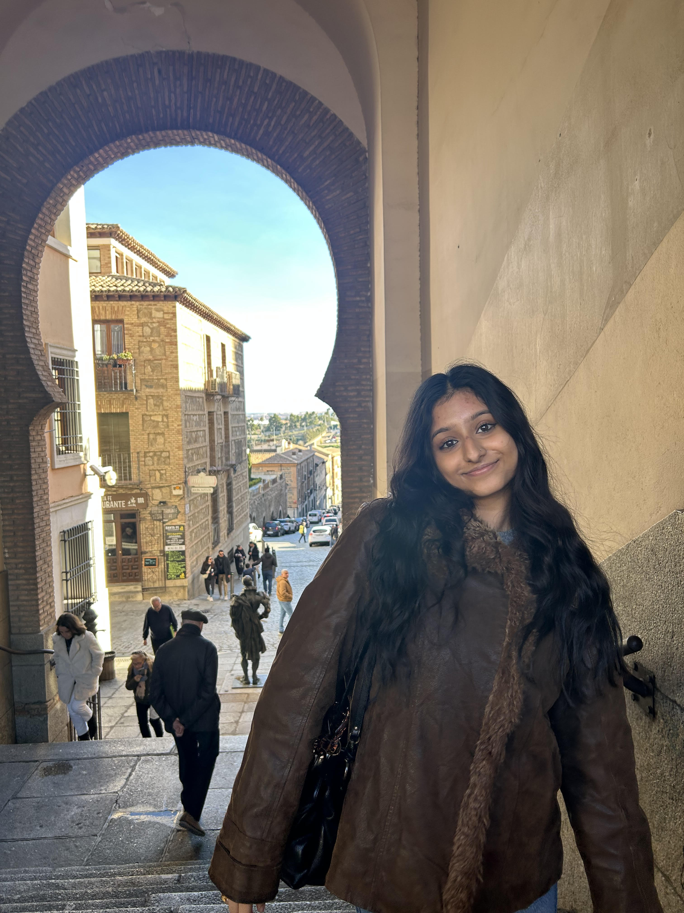

Business + Data Science Student at Northeastern University
Hi, I am Saiuri, a student at Northeastern University studying Business and Data Science. I am particularly interested in consulting, finance, and entrepreneurship, and I enjoy learning how data and financial insights can support strategic decision-making. My interest in finance began in high school, where I first took accounting classes and developed a curiosity about how businesses operate, manage money, and make long-term investments. Since then, I have continued exploring this interest through both coursework and professional experiences. I previously worked at Bain Capital on the Treasury Team, where I gained exposure to financial operations and the role treasury plays in managing liquidity and supporting large investment organizations. This summer, I will be working at EY in Audit and at Stax in consulting, where I am excited to continue building my analytical and problem-solving skills while learning from professionals across different areas of business. Outside of academics and work, I enjoy traveling and exploring new places. Over the past year, I have visited London, Cancun, and Portugal, each of which gave me the opportunity to experience different cultures, food, and perspectives. I am especially excited to continue traveling and plan to explore Amsterdam next. In my free time, I also enjoy trying new restaurants with friends and discovering new types of music.

Email: saiuri.parimi339@gmail.com
LinkedIn: LinkedIn Profile